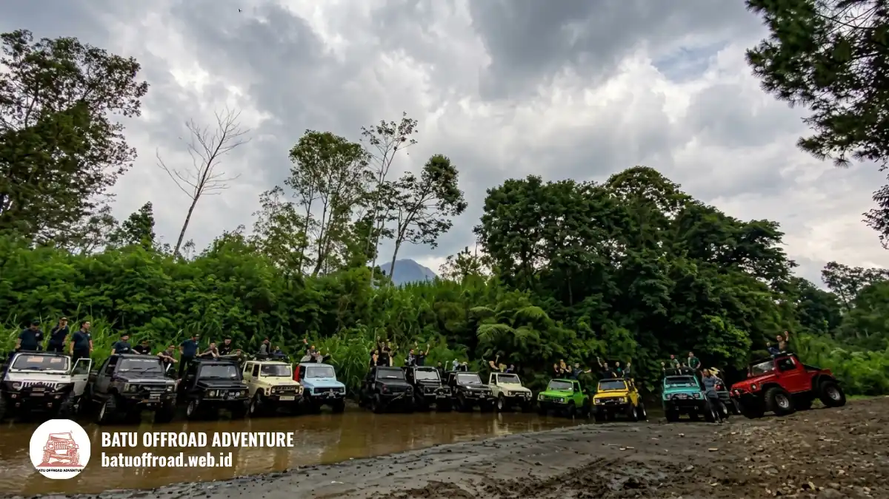

Offroad Coban Talun Batu, Pengalaman Jalur dan Cara Booking
Offroad Coban Talun adalah wisata petualangan naik jeep di jalur tanah dan berbatu sekitar Coban Talun, Kota Batu, Malang Raya, yang dipandu driver guide berpengalaman. Cocok untuk keluarga, teman, dan rombongan peserta. Booking mudah dilakukan lewat Batu Offroad Adventure di 0812-3398-9707.
- Offroad Coban Talun adalah aktivitas menjelajah jalur alam di Kota Batu dengan jeep dan driver guide.
- Peserta tidak perlu bisa menyetir offroad karena kemudi dipegang driver guide.
- Aktivitas ini cocok untuk keluarga, teman, rekan kerja, dan pasangan dengan kondisi kesehatan yang memadai.
- Durasi, paket, dan jadwal sebaiknya dikonfirmasi langsung ke operator sebelum berangkat.
Apa Itu Offroad Coban Talun?
Offroad Coban Talun adalah aktivitas menjelajah jalur alam di sekitar air terjun Coban Talun, Kota Batu, menggunakan jeep bersama driver guide.
Coban Talun berada di wilayah Kota Batu, yang termasuk kawasan Malang Raya. Dalam bahasa Jawa, "coban" berarti air terjun. Kawasan ini dikenal dengan udara pegunungan, hutan pinus, dan lanskap perbukitan yang menjadi latar perjalanan.
Offroad di sini bukan balapan. Ini adalah wisata petualangan dengan jeep yang dikemudikan driver guide, sementara peserta menikmati medan, pemandangan, dan suasana jalur.
Mengapa Kawasan Coban Talun Cocok untuk Offroad?
Kawasan Coban Talun cocok untuk offroad karena kontur perbukitan, jalur tanah, dan pemandangan alamnya memberikan sensasi petualangan yang sulit didapat dari wisata perjalanan biasa.
Medan yang bervariasi membuat perjalanan terasa hidup. Ada bagian jalur yang menanjak, menurun, dan berbatu, sehingga jeep menjadi kendaraan yang sesuai untuk menjelajahinya. Kondisi jalur dapat berubah mengikuti cuaca dan musim.
Apa Saja Manfaat Mengikuti Offroad Coban Talun?
Manfaat utama offroad Coban Talun adalah hiburan aktif di alam terbuka yang bisa dinikmati bersama-sama, dengan risiko yang dikelola oleh driver guide berpengalaman.
Secara umum, peserta mendapatkan beberapa hal berikut:
- Pengalaman petualangan tanpa perlu keterampilan berkendara offroad.
- Waktu berkualitas bersama keluarga, teman, atau rekan kerja.
- Kesempatan melihat pemandangan Kota Batu dari jalur yang tidak dilewati kendaraan biasa.
- Peluang mengambil foto dan video di lokasi yang berkesan.
Apa Bedanya dengan Wisata Biasa di Kota Batu?
Berbeda dengan wisata biasa, offroad Coban Talun menempatkan perjalanan itu sendiri sebagai daya tarik, bukan hanya tujuan akhirnya.
Wisata biasa di Kota Batu umumnya berfokus pada wahana atau taman tertentu. Pada offroad, peserta merasakan getaran jeep, tanjakan, dan medan alam secara langsung. Karena itu peserta perlu lebih siap secara pakaian dan kondisi fisik.
Pengalaman di Jalur
Pengalaman di jalur offroad Coban Talun berupa perjalanan jeep melewati medan tanah, tanjakan, dan pemandangan pegunungan Kota Batu yang terasa langsung dan seru.
Setiap rombongan umumnya menaiki jeep bersama driver guide yang mengenal jalur. Perjalanan berlangsung dengan kecepatan yang disesuaikan kondisi medan.
Seperti Apa Rasanya Berkendara di Jalur Offroad?
Berkendara di jalur offroad terasa berguncang, berdebu atau berlumpur tergantung cuaca, dan penuh sensasi. Peserta duduk di jeep sambil menikmati hembusan udara pegunungan.
Guncangan adalah bagian dari pengalaman. Peserta disarankan berpegangan sesuai arahan dan tidak berdiri atau berpindah posisi saat jeep bergerak. Sikap ini menjaga kenyamanan sekaligus keselamatan seluruh rombongan.
Apa Peran Driver Guide di Sepanjang Jalur?
Driver guide berperan sebagai pengemudi sekaligus pemandu yang mengendalikan jeep, memilih lintasan yang aman, dan menjelaskan hal penting selama perjalanan.
Selain mengemudi, driver guide biasanya memberi arahan keselamatan dan menunjukkan titik menarik di jalur. Kehadiran mereka membuat peserta pemula tetap bisa menikmati perjalanan dengan tenang.
Bagaimana Kondisi Jalur Saat Cuaca Berubah?
Kondisi jalur dapat berubah saat cuaca berubah. Hujan biasanya membuat tanah lebih licin dan basah, sehingga jadwal atau rute dapat disesuaikan oleh operator.
Cuaca di Kota Batu dapat berubah cukup cepat karena letaknya di dataran tinggi. Karena itu, sebaiknya tanyakan kondisi terbaru kepada operator sebelum berangkat.

Rombongan berfoto bersama deretan jeep offroad warna-warni
Untuk Siapa Offroad Ini?
Offroad Coban Talun cocok untuk keluarga, kelompok teman, rombongan kantor, dan pasangan yang ingin wisata aktif di Kota Batu tanpa perlu pengalaman berkendara offroad.
Karena kemudi dipegang driver guide, hambatan utamanya bukan keterampilan, melainkan kesiapan fisik dan kenyamanan menghadapi guncangan. Rombongan dari Malang Raya maupun luar kota dapat ikut selama memahami dan mengikuti arahan keselamatan.
Apakah Offroad Ini Aman untuk Pemula?
Offroad Coban Talun umumnya dapat diikuti pemula karena dipandu driver guide dan diawali briefing keselamatan. Peserta tetap wajib mengikuti seluruh arahan selama di jalur.
Rasa aman berasal dari dua hal: pengemudi yang mengenal medan dan peserta yang disiplin. Pemula cukup duduk dengan benar, berpegangan, dan mengikuti petunjuk. Bagi Anda yang ragu, bertanya dulu kepada operator adalah langkah yang bijak.
Apakah Anak-Anak Boleh Ikut?
Kebijakan usia peserta ditentukan oleh operator. Sebaiknya tanyakan batas usia dan aturan pendamping kepada Batu Offroad Adventure sebelum booking rombongan keluarga.
Anak-anak umumnya menikmati sensasi jeep, tetapi kenyamanan mereka bergantung pada usia dan kondisi. Orang tua perlu memastikan anak dapat duduk tenang dan mengikuti arahan selama perjalanan.
Siapa yang Sebaiknya Berpikir Ulang Sebelum Ikut?
Orang dengan kondisi kesehatan tertentu, seperti masalah punggung, leher, atau kehamilan, sebaiknya berkonsultasi dengan tenaga kesehatan sebelum mengikuti offroad.
Informasi di artikel ini bersifat umum dan bukan nasihat medis. Guncangan di jalur dapat tidak nyaman bagi sebagian orang. Beri tahu operator tentang kondisi khusus anggota rombongan saat booking agar mereka dapat memberi saran yang sesuai.
Cara Booking dan Info Kontak
Booking offroad Coban Talun dilakukan dengan menghubungi Batu Offroad Adventure di nomor 0812-3398-9707 untuk menanyakan paket, jadwal, dan ketersediaan jeep.
Cara paling praktis adalah menghubungi operator langsung lewat nomor tersebut. Sampaikan kebutuhan rombongan dan minta konfirmasi tertulis mengenai paket serta jadwal yang disepakati.
Informasi Apa yang Perlu Disiapkan Sebelum Booking?
Sebelum booking, siapkan jumlah peserta, tanggal dan jam yang diinginkan, serta catatan khusus seperti keberadaan anak-anak atau peserta dengan kebutuhan tertentu.
Dengan informasi itu, operator dapat menentukan jumlah jeep yang sesuai dan menjelaskan paket yang tersedia. Semakin jelas informasi awal, semakin kecil risiko perubahan jadwal di hari keberangkatan.
Apa yang Perlu Dibawa dan Dikenakan?
Kenakan pakaian dan alas kaki yang nyaman serta tertutup, dan bawa jaket tipis. Kota Batu berada di dataran tinggi sehingga udaranya dapat terasa sejuk.
Bawa juga air minum, perlengkapan foto yang aman dari guncangan, dan cadangan pakaian bila cuaca berpotensi hujan. Hindari membawa barang berharga yang mudah terlepas selama perjalanan.
Apa Kesalahan Umum yang Sebaiknya Dihindari?
Kesalahan umum peserta adalah datang terlambat, memakai sandal licin, mengabaikan briefing, dan tidak menanyakan cuaca atau jadwal sebelum berangkat.
Hindari juga membawa barang yang tidak perlu dan memaksa berdiri atau berpindah tempat di jeep. Mengikuti arahan driver guide adalah kunci perjalanan yang aman dan menyenangkan.
Di Mana Menemukan Informasi Wisata Resmi Kota Batu?
Informasi umum tentang wisata dan layanan publik Kota Batu dapat dilihat di situs resmi Pemerintah Kota Batu di batukota.go.id.
Situs resmi berguna untuk memeriksa informasi umum daerah. Untuk detail paket, jadwal, dan tarif offroad, tetap rujuk langsung ke operator karena hanya mereka yang dapat memastikan ketersediaan terbaru.
Kesimpulan
Offroad Coban Talun adalah pilihan wisata aktif di Kota Batu bagi Anda yang ingin merasakan jalur alam tanpa harus mengemudi sendiri.
Driver guide memegang kendali, sementara peserta menikmati medan dan pemandangan.
FAQ
-
Berapa lama durasinya?
Durasi bergantung pada paket yang dipilih dan kondisi di lapangan. Tanyakan durasi pasti kepada Batu Offroad Adventure saat booking agar sesuai rencana rombongan. -
Di mana lokasi basecamp?
Basecamp berada di kawasan Kota Batu, dekat area Coban Talun. Alamat dan titik kumpul pasti akan diinformasikan operator saat booking dikonfirmasi. -
Bagaimana cara booking Batu Offroad Adventure?
Hubungi Batu Offroad Adventure di 0812-3398-9707. Sampaikan jumlah peserta, tanggal, dan jam yang diinginkan, lalu minta konfirmasi paket dan jadwal.
Artikel Terkait